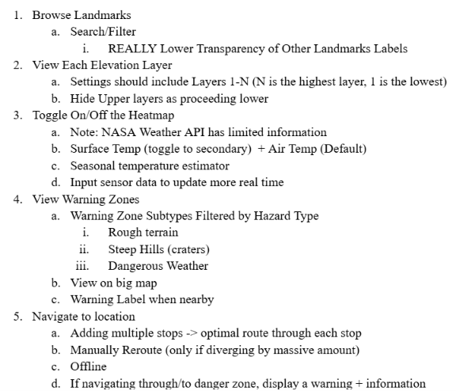
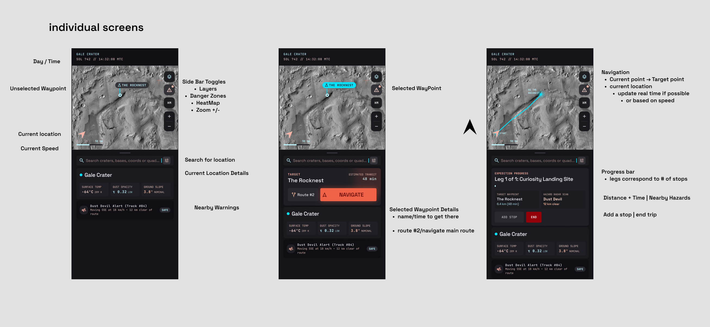

Requirements Specification
Before beginning development, we analyzed the challenge requirements and identified the key features needed to support a successful Mars exploration mission. This included researching NASA datasets, determining what information would be most valuable to astronauts, and outlining essential features such as surface mapping, environmental conditions, route planning, and hazard detection.

.png)
Designing in Figma
With the core requirements established, I translated the concept into a cohesive user interface using Figma. I designed the different screens, mapped out user interactions, and organized complex scientific data into an accessible layout. The goal was to create an intuitive experience that would allow astronauts to quickly understand their surroundings and make informed decisions.

Development & Implementation
Once the designs were finalized, we brought the concept to life by translating the Figma prototypes into a functional program. We implemented the interface, integrated the necessary features and data, and developed the interactions that allow users to explore Martian terrain, monitor environmental conditions, and plan routes. This stage transformed the initial concept into a working application.